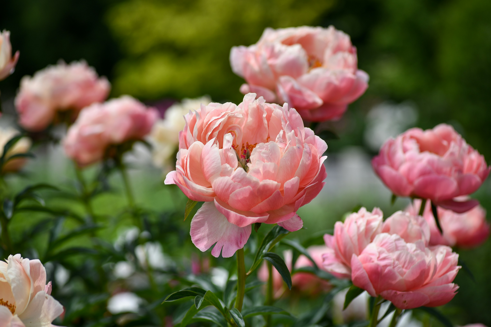

Peony
Paeonia
Peony is a beautiful flowering plant known for its large, soft and richly layered blooms. It is loved for its elegant appearance and pleasant fragrance.
Full Sun
Moderate
Fertile & Well Drained
Spring & Early Summer
How to Care for Peony
Peonies grow best with plenty of sunlight, good drainage and regular care during their growing season.
Sunlight
Place peonies in a location that receives several hours of sunlight each day.
Watering
Water deeply when the soil begins to dry, especially during active growth and flowering.
Soil
Use fertile, well-drained soil that provides enough space for healthy root development.
Maintenance
Remove faded flowers and keep the area around the plant clean to support healthy growth.
How to Grow Peony
Peonies can become long-lived garden plants when planted in a suitable sunny location.
Choose a Sunny Location
Select a location with plenty of sunlight and enough room for the plant to grow.
Prepare the Soil
Use fertile soil with good drainage and loosen the planting area before planting.
Plant Carefully
Plant the peony in a suitable position and avoid overcrowding it with other plants.
Provide Regular Care
Give adequate sunlight and water while keeping the soil well drained.
Peony Fact 🌸
Peonies are known for their large, layered flowers and can live and bloom in gardens for many years when properly established.